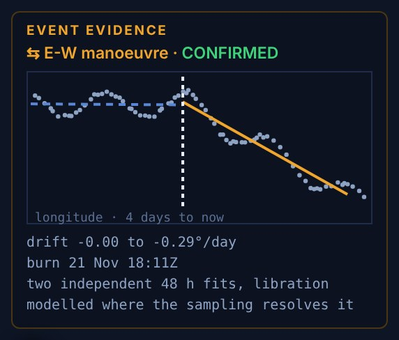
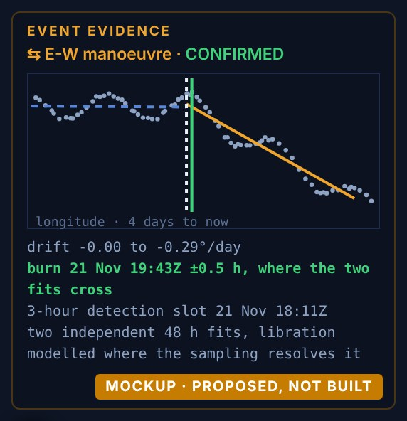

Today a confirmed east-west burn is stamped at the 3-hour split the detector tested, not at the burn. The proposal is to time it where the two fitted drift lines cross, state the uncertainty beside it, and key the event on that time so it stops changing as new data arrives.
Three decisions, in the form at the foot of the page: go or no-go, how the event id is keyed, and how wide the stated uncertainty is drawn.
FACTThe detector tests a candidate split every 3 hours and stamps a confirmed burn with the split that scored highest (events.ew_split). On 393 synthetic burns with known true times, run through the production detector, the stamp is off by a median of . h for a 0.05 deg/day burn and . h for 0.3 deg/day. The worst 5% are off by up to . h.
FACTThe stamp moves as data arrives. Advancing the store hour by hour for 9 hours, the same burn took a median of . and up to . different epochs. Each one is a new event id, so the Shift Brief can show one burn as new more than once. This is the id churn recorded on 17 November.
A burn changes the drift rate, not the longitude. So the trend line fitted before the burn and the one fitted after it meet at the burn. The fits are the same ones the detector already makes: 48 hours each side, with the daily libration fitted out. The estimate is refined twice by re-fitting about the crossing, and refused (the grid stamp stands) if the lines meet more than two grid steps from the split.
On this burn the grid stamp is . h from the truth and the crossing . h, with a stated uncertainty of ±. h (2σ).
| Burn size (deg/day) | Burns | Grid median / 95% | Crossing median / 95% | Crossed | Truth within ±2σ |
|---|
INFERENCESynthetic belt: libration 0.03 to 0.25 deg, provider scatter 0.003 to 0.015 deg, fixes every 30 to 120 minutes. Errors in hours. Live calibration is still owed, as for every detector threshold.
The real interface, focused on the worked burn seeded into the app. The right-hand figure paints the proposed result over the same view, from the prototype run against the app's own served data. Click the numbered markers.


epoch becomes the crossing whenever one is found within two grid steps, else the grid split as today.crossing: the epoch, sigma_hours and the method. split stays.id is keyed on the crossing rounded to the nearest hour (decision 2), which is what stops the churn.detectable_from, and the drift rate cut at the burn, which moves with the epoch and so is cut at a truer time.